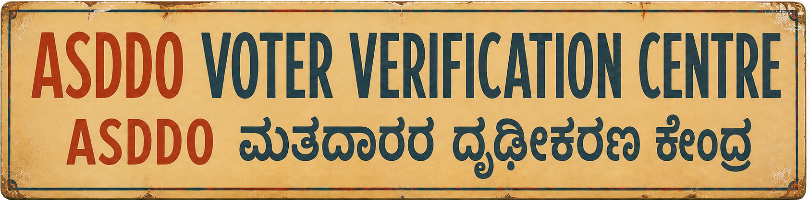

Is your name at risk of deletion? Ee form fill maadi to check.

9,991,690 voters indexed
Snapshot 9 Aug 2026 · 218 of 224 constituencies
If your name appeared here
Do not panic.
An ASDDO entry is a publication record from Karnataka’s 2026 Special Intensive Revision — not a final deletion. The current electoral roll and your ERO decide the official status. These counters tell you what to do next.
Your next steps
- Start with the source page. Compare the Voter ID first. Then read the names, part, serial number and reason as printed.
- Reach your local officer. Ask the BLO or ERO what the entry means for the record today. CEO Karnataka’s Voter Facilitation Centre page provides current contact details.
- If an Enumeration Form is still pending, contact the BLO or ERO now. The CEO Karnataka target was 8 August. Ask which filing route remains available, submit through the official channel they identify, and keep the acknowledgement.
- Use the claims route for a missing draft-roll entry. File Form 6 with the prescribed SIR Declaration during the active claims window. Your ERO will tell you which supporting papers apply.
- A move uses Form 8. Submit it through the ECI portal or to the ERO serving your new address. The form covers shifts within and across constituencies.
- Respond to any notice. Use ECI’s notice service for the requested documents. Attend the hearing time given by the officer and retain your copies.
Schedule checked 9 August 2026
Dates to keep in view
8 Aug 2026Target for BLO house visits and digitisation in the CEO Karnataka update; this date has passed.
5 Aug – 4 Sep 2026ECI’s published schedule places claims and objections in this window.
3 Oct 2026EROs complete notice work and decide claims by this target in ECI’s schedule.
7 Oct 2026ECI’s published schedule says the final electoral roll will appear on this date.
What this index contains
9,991,690records carrying a stated reason in this snapshot.
54,528electoral parts represented.
218 / 224Assembly constituencies covered; the snapshot manifest lists AC 36, 37, 38, 39, 98 and 154 as gaps.
424,791mapping-only rows stay outside the search; ten upstream folder listings were inaccessible during the refresh.
The index keeps one canonical entry for each Assembly constituency, part, prior-roll serial number and Voter ID when the source carries a stated reason. Source files carry publication dates from 17 July to 8 August 2026; the index was prepared on 9 August 2026. PDF text can carry spelling or extraction errors.
Official counters
Official electoral search
ECI Voters’ Service Portal
Official forms
CEO Karnataka ASDDO page
Find BLO / ERO contacts
CEO Karnataka
Karnataka voter helplines: 1950 · 1800 4255 1950
DataChutney built this independent, unofficial index from public ASDDO files. Source gaps, spelling changes and PDF extraction can affect a match — the source page, the current roll and your ERO have the final word.